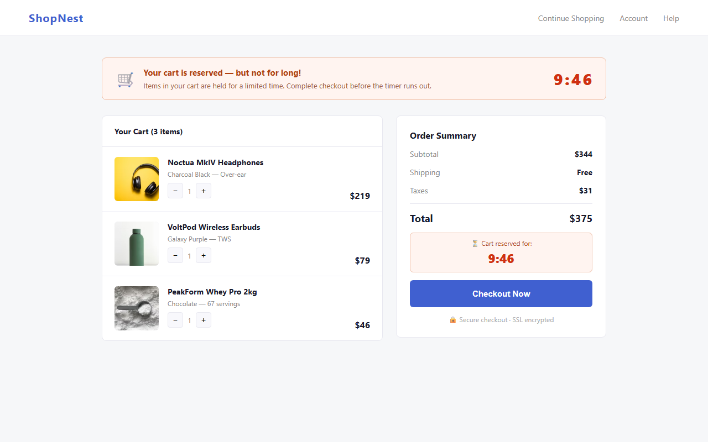
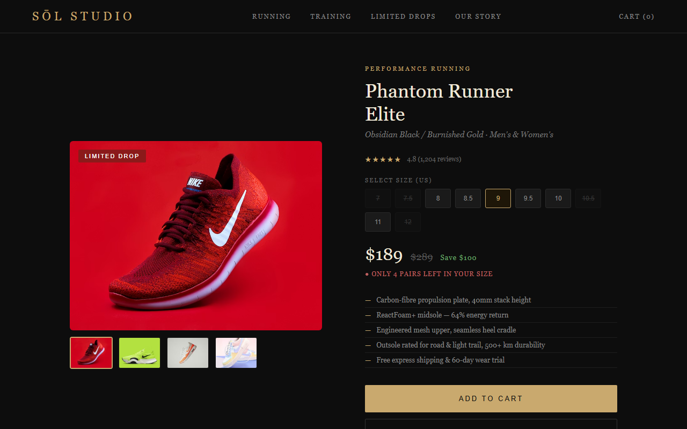

A Chrome extension that runs a two-stage ML pipeline: semantic embeddings computed in-browser and eight XGBoost classifiers on the server, identifying deceptive UI patterns in real time as you browse.
Deceptive design patterns, commonly called dark patterns, are manipulative UI techniques deployed by websites to influence users into actions that benefit businesses at users' expense: guilt-laden decline buttons, fabricated stock limits, deliberately confusing opt-out language, and interfaces that bury privacy controls.
Unlike outright fraud, dark patterns operate in a legal gray zone: psychologically coercive but technically compliant. A 2019 study by Mathur et al. found dark patterns on over 11% of 11,000 shopping websites surveyed. Regulatory attention is growing as the FTC and European regulators issue guidance and enforcement actions, yet users remain largely unaware while browsing.
The core challenge is detection at scale. Dark patterns depend on contextual signals including visual asymmetry, linguistic framing, and interface hierarchy that keyword rules alone cannot capture. Existing academic datasets label patterns at the element level but generalize poorly to live, adversarially designed production pages.

The Deceptive Pattern Detector is a Chrome extension that automatically scans pages as you browse with no manual action required. It flags manipulative UI elements with plain-English explanations and calibrated confidence scores, giving users the awareness to make truly informed decisions.
Any user browsing e-commerce sites, SaaS sign-up flows, subscription services, or hotel and travel booking pages, where dark patterns are most prevalent. No technical knowledge required.
Semantic embeddings are computed entirely in your browser via ONNX Runtime WebAssembly. Only stripped, anonymized candidate elements above a confidence threshold ever reach the classification server.
The two-stage gatekeeper filters roughly 80% of elements before any server call. In-browser embedding completes in under 150 ms. Full end-to-end classification under 200 ms.
Rather than raw model scores, the popup explains what was detected and why it is manipulative, raising awareness rather than silently blocking content.

The system resolves a core tension: accuracy requires semantic understanding, but sending every UI element to a server is too slow and raises privacy concerns. The architecture runs expensive work in-browser first, then sends only high-confidence candidates through the network.
choice_set_extractor.js
Walks the Accessibility Tree and DOM to identify decision-point UI groups: clusters of buttons, links, and checkboxes that together present a binary or multi-way choice. Each set captures option labels, CSS computed properties, and subtree structure.
noise_classifier.js
Uses Jaccard similarity and keyword matching to discard navigation chrome, footers, social share buttons, and other non-decision UI. Eliminates the majority of candidate elements at negligible compute cost.
offscreen_embedder.js
Runs all-MiniLM-L6-v2 via ONNX Runtime WebAssembly in a dedicated offscreen document, generating 384-dimensional semantic vectors for choice-set text without any network call. Embedding completes in under 150 ms.
dp_gatekeeper.js
Applies cosine-similarity threshold against dark-pattern anchor embeddings. Only candidates whose similarity exceeds the gate (roughly 20% of inputs) proceed to the server, cutting both latency and data exposure.
Flask API · XGBoost
Eight independent binary classifiers evaluate 80+ engineered features: text signals, CSS asymmetry, structural properties, and embedding features. Raw probabilities are post-hoc calibrated via Platt scaling for meaningful confidence scores.
Extension Popup
The popup displays flagged patterns with plain-English descriptions and calibrated confidence scores. The toolbar badge icon updates to reflect the current page risk level at a glance.
The classifier targets eight classes drawn from established academic taxonomies (Gray et al. 2018; Mathur et al. 2019) and refined for detectability from client-side structure. Select any card to expand.
Each pattern class is detected by a dedicated binary XGBoost classifier trained on real labeled captures augmented with calibrated synthetic data. The pipeline covers collection, labeling, augmentation, model fitting, and calibration.
A Playwright-based browser automation pipeline navigated live websites, extracted choice sets from the Accessibility Tree and DOM, and stored results including option text, CSS properties, and subtree structure in a PostgreSQL database.
Captured choice sets were reviewed by human annotators using a custom labeling toolchain, assigning each a decision (dark or not dark) and, for dark examples, one or more pattern-type tags from the eight-class taxonomy.
Rare patterns required synthetic augmentation: pattern-specific choice sets generated programmatically with distributions calibrated to match real captures (dialog rates, option counts, CSS targets, text-regex hit rates) to reduce distributional shift.
One XGBoost binary:logistic model per pattern. Class imbalance
handled via scale_pos_weight. Early stopping with grouped shuffle
splitting prevents within-site leakage. Hyperparameters: max depth 5,
lr 0.05, subsampling 0.9.
Raw XGBoost probabilities are post-hoc calibrated by fitting a logistic regression on held-out logit scores. Validated for reduced Brier score and log-loss across all eight classes on a golden real-labeled set.
Rather than evaluating elements in isolation, the system groups related elements into choice sets. An accept button and its guilt-laden decline link form one set, letting the model reason about the relationship between options.
Two custom dashboards drove the entire model lifecycle: one for training and evaluating classifiers, one for monitoring how those models perform against real-world extension traffic.

A browser-based training environment built into the Flask backend. Researchers select one of the eight pattern classes, tune XGBoost hyperparameters, toggle individual features from the 84-feature catalog, and launch a full cross-validated training run: without touching a terminal.

A server-side analytics dashboard that turns the raw stream of extension events into structured insight: making it possible to measure how effectively the two-stage pipeline filters noise before any classifier runs.
Running a 23 MB MiniLM model via ONNX Runtime WASM in a Chrome MV3 extension without blocking the main thread required a dedicated offscreen document and message-passing architecture. Embedding completes in under 150 ms on representative hardware.
The dual noise-filter and cosine-similarity gate reduces server calls by roughly 80% versus a naive all-elements approach. The extension runs unobtrusively on content-rich pages without perceptible latency or privacy leakage from user browsing context.
The classification API is deployed at darkpatterns.duckdns.org behind HTTPS, handling concurrent requests from multiple active extension users with average response latency under 200 ms for a full scoring request.
Evaluating elements individually misses most dark patterns. The manipulation is expressed in the relationship between options: a prominent accept versus a hidden decline, not in any single element alone. Choice set abstraction was the critical architectural decision.
Rare patterns like privacy zuckering required programmatic augmentation. Calibrating synthetic distributions to match real-capture statistics (dialog rates, CSS targets, option counts) was essential to avoiding distributional shift between training and live inference.
Expanding training captures from SaaS and checkout flows, refining synthetic distributions for rare patterns, cross-browser compatibility (Firefox, Edge), and evaluating lightweight server-side model alternatives for better scalability.
Five UC Berkeley MIDS students in the Spring 2026 cohort built this project end-to-end: from dataset curation and model training to the Chrome extension and Flask backend.
Focused on XGBoost model architecture, feature engineering, and calibration pipeline design across all eight pattern classifiers.
iSchool Profile →Led Chrome extension architecture, popup UI, and integration with the backend evaluation API and gatekeeper layer.
iSchool Profile →Built the Flask API, PostgreSQL schema, Playwright capture pipeline, and the custom labeling toolchain for choice-set annotation.
Designed the V3 text signal feature catalog spanning urgency, scarcity, social proof, guilt-framing, and promotional phrase detection.
iSchool Profile →Led dataset labeling strategy, synthetic data generation pipelines, calibration evaluation, and model performance benchmarking.
iSchool Profile →